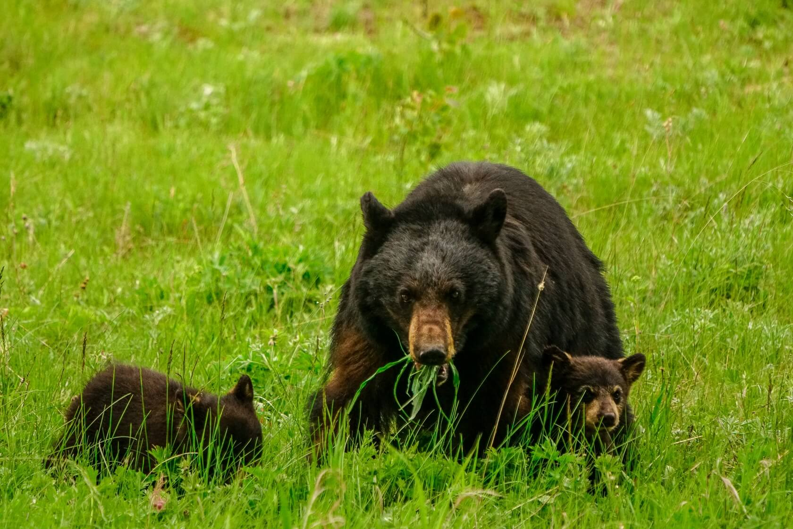
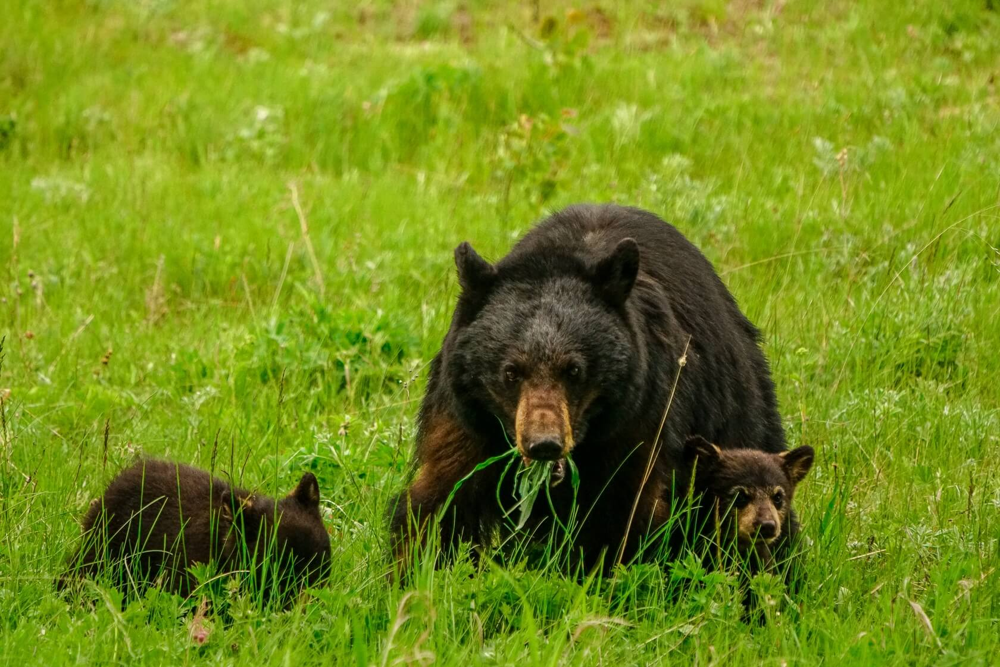
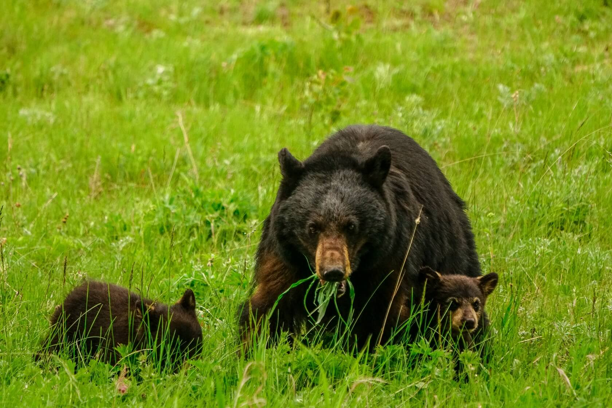

Updated: June 30, 2021 / by Max Desouza
Trip Data
What Makes the Grand Prismatic so Grand? Extremely hot water travels 121 feet from a crack in the Earth to reach the surface of the spring. The third largest spring in the world, the Grand Prismatic is bigger than a football field at 370 feet in diameter. A gridiron is 360 feet long and 160 feet wide.
Old Faithful is a cone geyser in Yellowstone National Park in Wyoming, United States. It was named in 1870 during the Washburn–Langford–Doane Expedition and was the first geyser in the park to be named.[3][4] It is a highly predictable geothermal feature and has erupted every 44 minutes to two hours since 2000.[5] The geyser and the nearby Old Faithful Inn are part of the Old Faithful Historic District.
Morning Glory Pool is a hot spring in the Yellowstone Upper Geyser Basin of the United States. The spring is also known by the name Morning Glory Spring.
Lamar Valley is the best place in Yellowstone to see wildlife. Elk, bison, deer, bear, coyotes, and wolves can all make appearances here. Late afternoon and early evening are one of the best times for wildlife spottings, so your timing should be perfect. Exit the park at the northeast entrance.
It's a great spot to see the twists of the Yellowstone River below and in particular to appreciate the contrasting colors of the canyon. It's also a good place to see the best views of the South Rim from the North Rim. Some areas can be quite perilous, so it's very important to stay on the designated trail.
